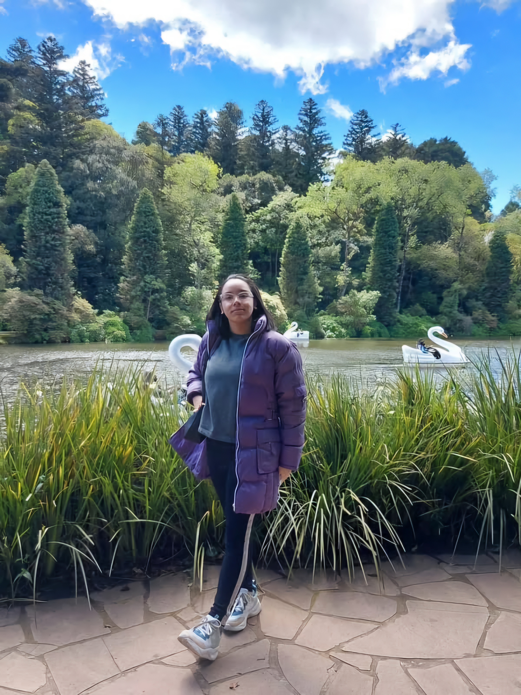
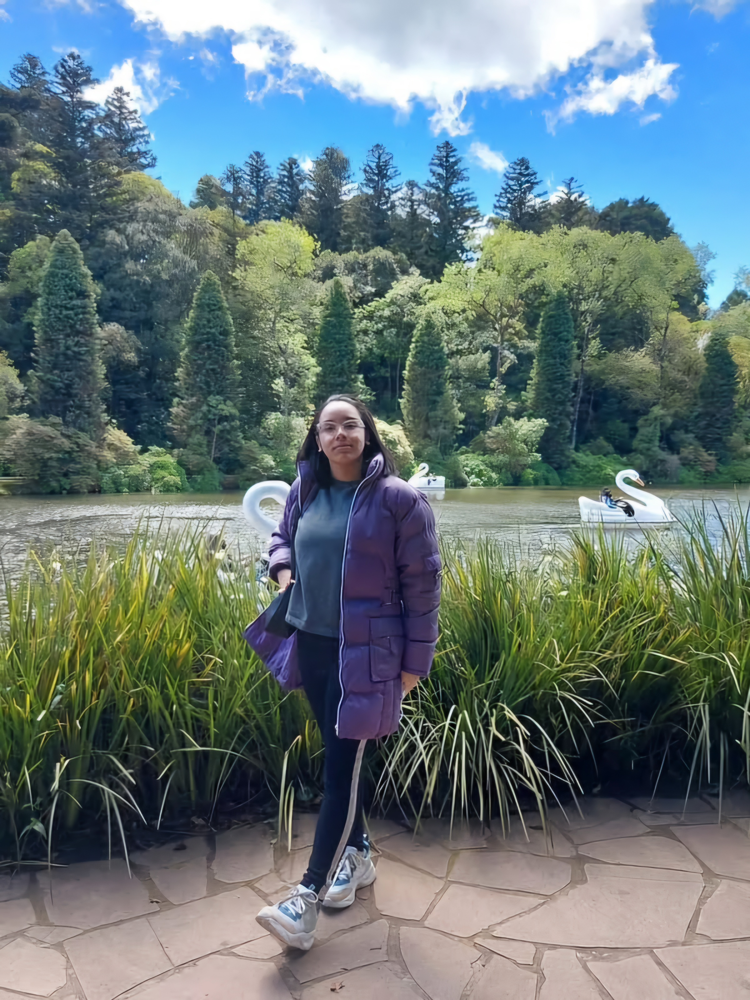

Apresentação
Olá! Me chamo Julianny, tenho 19 anos. Estou no 2 semestre de Análise e Desenvolvimento de Sistemas. Sou curiosa, determinada e apaixonada por aprender coisas novas — principalmente quando envolvem tecnologia, criatividade e solução de problemas. Gosto de unir lógica com design, e estou sempre buscando evoluir pessoal e profissionalmente.

Histórico profissional/acadêmico
-
- Estudante do Capacita Br em Desenvolvimento Fullstack.
- Estudante do programa one em especialização em Ciência de dados.
- Voluntária em iniciação científica.
Interesses e especialidades técnicas
Tenho grande interesse nas áreas de: Desenvolvimento web Análise de dados, Inteligência artificial aplicada, Design de interfaces e usabilidade. Minhas especialidades técnicas em início de carreira incluem: HTML e CSS para criação de páginas web com foco em estrutura, acessibilidade e layout responsivo. Git e GitHub para versionamento de código, colaboração em equipe e publicação de projetos. Conhecimento básico de JavaScript e lógica de programação.
Contato e Redes Sociais
julianny-alb
Julianny
julianny-alb
Interesses

 

Aprendizados
Nessa pagina conto sobre o que aprendi durante o curso:
aprendizados